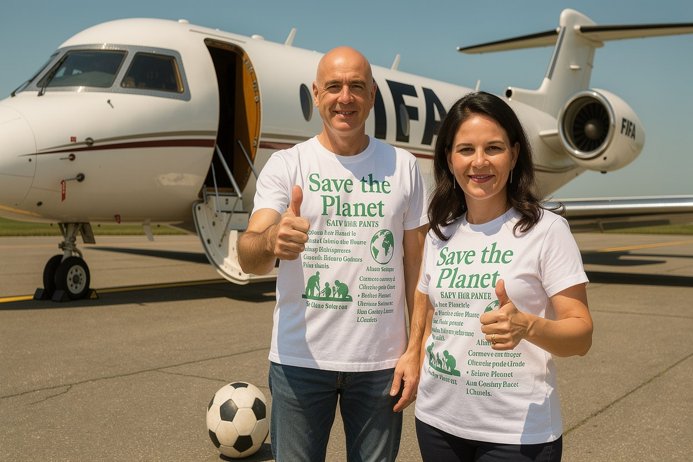

Nachhaltig, im Privatjet

Während die FIFA den Fußball nachhaltig nennt, hat ihr Präsident die Erde in fünf Wochen fast zweimal umrundet.
Laut einer Auswertung der Nachrichtenagentur AP legte Gianni Infantino zwischen dem 9. Juni, zwei Tage vor dem Anpfiff, und dem Finaltag rund 95.403 Flugkilometer zurück. Das sind fast zweieinhalb Erdumrundungen. Er besuchte 43 der 104 Spiele, war in jedem der 16 Stadien mindestens einmal, allein fünfmal in Miami. Geflogen ist er in einer Gulfstream G650 aus der Charterflotte des WM-Sponsors Qatar Airways.
Es ist derselbe Verband, der Klimabekenntnisse in seine Hochglanzberichte schreibt und Turniere als Vorbild an Nachhaltigkeit verkauft. Sein Präsident pendelt im Privatjet des Sponsors zwischen den Spielorten. Die Zahl stammt nicht aus einer Kampagne, sondern aus den öffentlich verfügbaren Flugdaten, die AP ausgewertet hat.
Das Muster ist nicht auf den Fußball beschränkt. Die grüne Ex-Außenministerin Annalena Baerbock ließ sich in einem A350 der Flugbereitschaft von Frankfurt nach Luxemburg fliegen, Kurzstrecke, für eine Person, Anlass war Berichten zufolge ein Fußballspiel. Der Start erfolgte so spät, dass es eine Ausnahme vom Frankfurter Nachtflugverbot brauchte, gegen das ihre Partei sonst kämpft. Ein anderes Mal wollte sie in Kopenhagen keine drei Stunden auf den Rückflug warten; die Flugbereitschaft schickte eine zweite Maschine mit frischer Crew, der Ersatzflieger kehrte leer zurück. In ihren ersten rund 14 Monaten hob der Regierungsflieger für sie etwa 67-mal ab, nach damaligen Recherchen rund 5.000 Tonnen CO2 und etwa 7,6 Millionen Euro. Zu Amtsbeginn hatte sie angekündigt, möglichst mit der Linie zu fliegen. Geblieben ist die Ansage.
Heute steht Baerbock der UN-Generalversammlung vor, die die Nachhaltigkeitsziele hochhält. Wasser predigen und Kerosin verbrennen ist überparteilich. Infantino, der die WM im Privatjet des Sponsors abflog, würde bei den deutschen Grünen kaum auffallen.
Mehr dazu: Prinzipien mit Ablaufdatum.